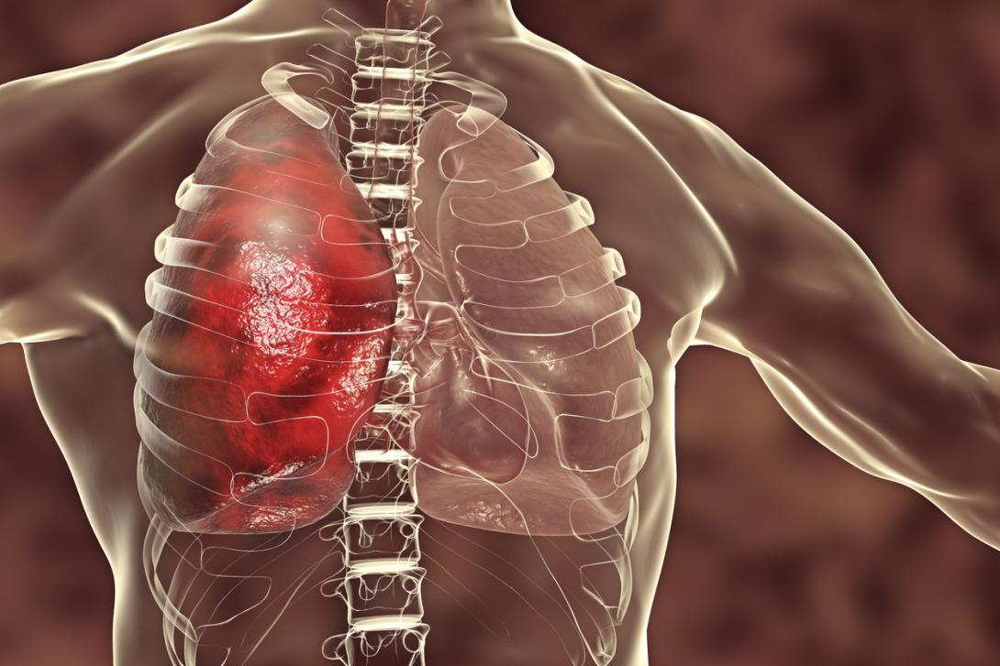
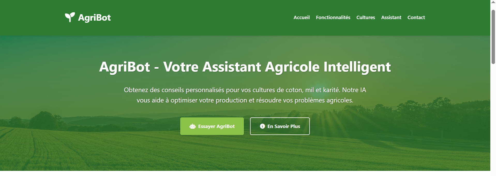

Mes Projets

Analyse de la qualité des œufs dans une ferme
Classification des œufs selon leur qualité (fertile, infertile, mort)

Analyse de sentiment sur la qualité de la formation à l'UVBF
Classification des opinions des étudiants sur la qualité de la formation à l'UVBF

Détection de la pneumonie
Détection de la pneumonie à partir d'images pulmonaires de scanner

Chatbot d'aide aux agriculteurs
Chatbot pour répondre aux questions des agriculteurs sur certaines cultures